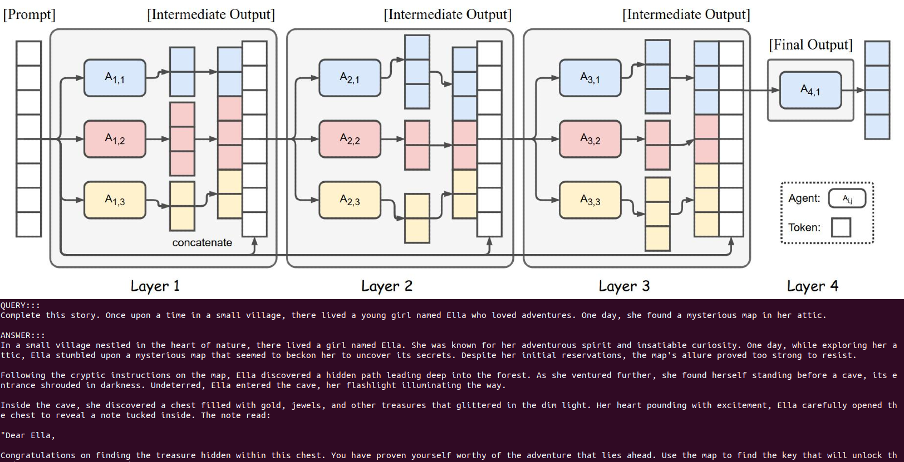
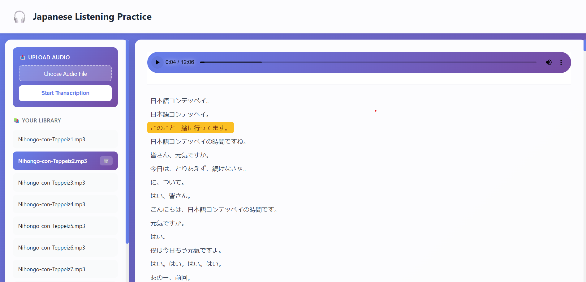
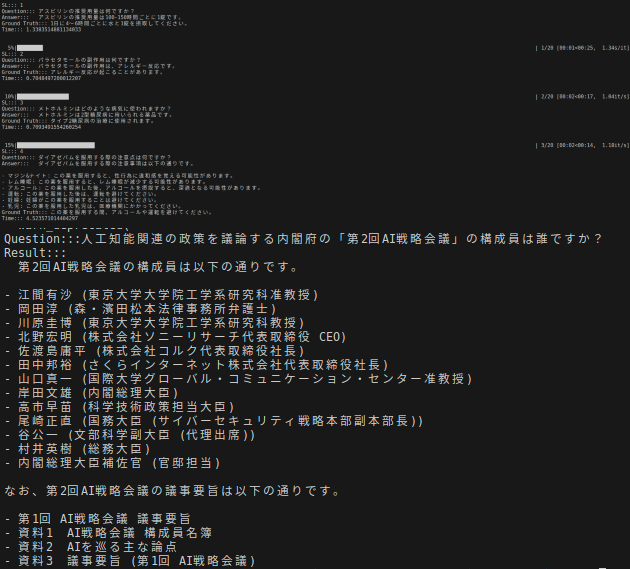
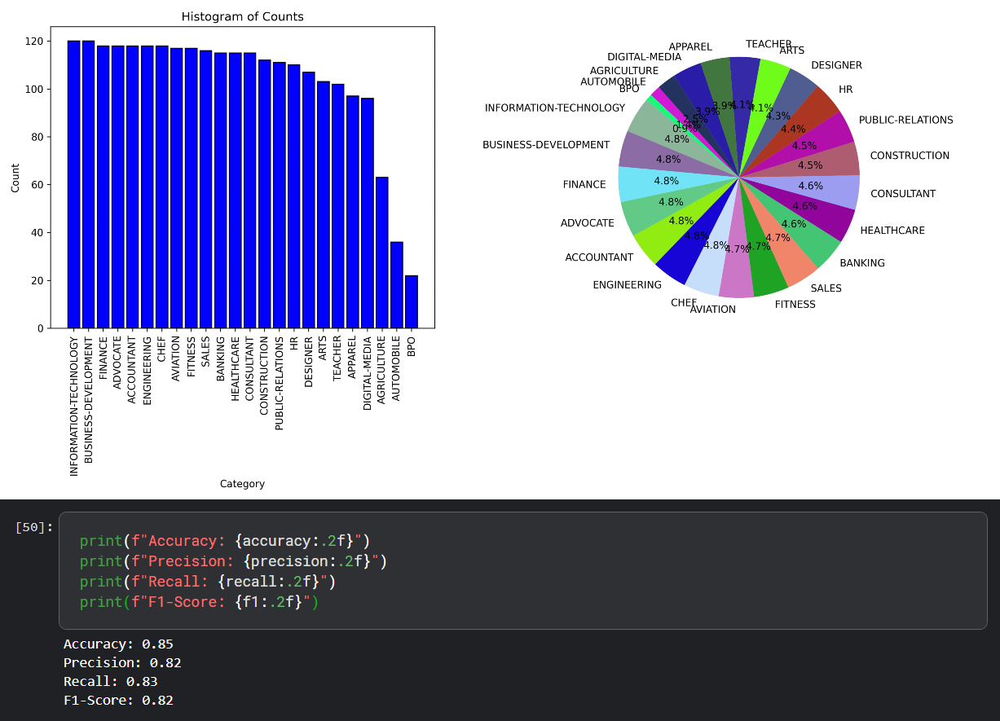
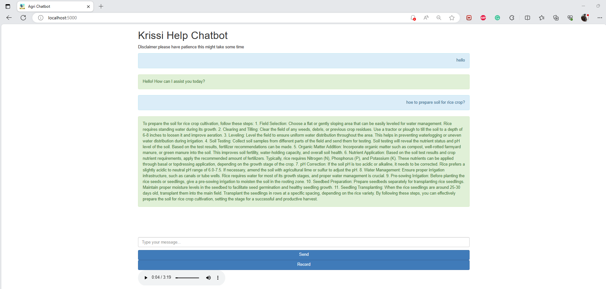

04 / Research
— 研究
A committed and disciplined individual leveraging AI to push the boundaries of creative expression, specializing in traditional AI techniques and Generative AI to build RAG pipelines, LLM agents, and fine-tune models. Equally effective independently or as part of a team. With strong ties to Japan and a passion for innovation, currently living in Saitama aspiring to build a long-term career in Japan 日本.
I'm an AI engineer with three years of production experience, focused on the layer where research-grade techniques meet shippable systems. My day-to-day is LLM fine-tuning and pretraining, retrieval pipelines, and building multi-agent systems with LangGraph, AutoGen, and CrewAI — plus the unglamorous engineering work that keeps them from breaking in production.
I started at Next Solution Lab shipping 20+ generative AI proof-of-concepts, including direct work with Deloitte Japan. I then moved to Silicon Orchard, where I've spent the past year working with US-based clients — leading small-scale projects end-to-end as team lead, mentoring junior engineers, and shipping conversational recommendation, visual search, and Azure-OpenAI SQL generation for an e-commerce platform.
A meaningful slice of my work is also cloud and infrastructure — Azure Cloud, Azure DevOps, Azure APIs, model monitoring, and day-to-day server maintenance for the systems we deploy. Production AI isn't just about the model; it's about everything around it.
Outside production, I publish. My recent paper ATLASS (SOSE 2025) explores closed-loop LLM systems that create and use their own tools. I'm currently working on TinyAgent — fine-tuning small language models for agentic tasks on edge devices.
My long-term plan is in Japan. I'm at JLPT N3, studying everyday to improve my Japanese more, and I'm looking for a role where I can grow with a team that cares about advancing humanity through AI.
A ReAct-style agent built on the open-source OpenHermes-2.5-Mistral-7B. Reasons through multi-step research queries and decides which of four tools to call — SerpAPI, Wikipedia, PubMed, or arXiv — rather than depending on closed-source GPT-4 for the agentic loop. Ships with a FastAPI UI and a terminal interface that exposes the full chain of thought.
A RAG application that answers legal questions in Japanese using the full corpus of Japanese law as its knowledge base. Built on ELYZA-Japanese-LLaMA-2-7B with multilingual-e5 embeddings, and engineered so the knowledge base is swappable — point it at a different corpus and the same pipeline becomes a teacher, doctor, or anything else.

A layered multi-LLM pipeline that approaches GPT-4-class quality using only small open-source models. Layer-1 proposers generate candidate answers; subsequent aggregator layers synthesize, critique, and refine. Inspired by the 70B-parameter MoA paper, but engineered for setups where renting an A100 isn't an option.

A polished audio-transcription web app built on OpenAI Whisper, supporting 99+ languages with synchronized text highlighting during playback. Click any text segment to jump to that point in the audio. Designed especially for Japanese language learners and journalists. CPU-optimized with optional CUDA acceleration.
LoRA fine-tuning of Open-Calm-7B on the Japanese Alpaca dataset for instruction-following in Japanese. Memory-efficient training pipeline with PEFT, evaluating output quality on Japanese-specific tasks where general-purpose LLMs typically underperform.
Hybrid retrieval system that routes user queries between a local CSV-backed RAG store and live web search via SerpAPI — in Japanese. The router decides per-query whether the answer lives in the structured corpus or needs fresh information from the web.

Seven RAG pipelines for plain text, PDF, HTML, Markdown, JSON, CSV, and entire directories — built with LangChain. Designed as a reference repository so anyone starting with RAG can copy a pattern that matches their data and adapt from there.

BERT fine-tuned for 24-category resume classification, paired with Belt-NLP chunking to handle long documents that exceed the model's context length. Practical applied-NLP work focused on real-world document processing.

Domain-specific chatbot for agriculture supporting both text and voice interactions. Blends OpenAI and HuggingFace APIs for natural conversation with farmers, surfacing crop, weather, and best-practice information through a friendly UI.
An intelligent file-management agent powered by GPT-4o, with 6 tools for exploring, reading, searching, and analyzing files across formats (txt, md, csv, json, pdf, docx). All operations are confined to a sandboxed safe directory, with real-time tool-execution logging so you can see exactly what the agent is doing and why.
Continual pretraining pipeline for LLaMA and Mistral models using LoRA and DeepSpeed for memory-efficient training. Adapts general-purpose foundation models to specialized domains without the full cost of pretraining from scratch.
Looking for a job related to AI with a Japan focus, strong research roots, and production experience. I'd love to hear from you — reach out via any of the channels below.